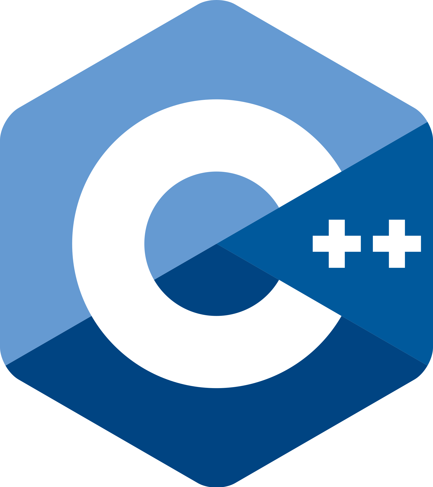
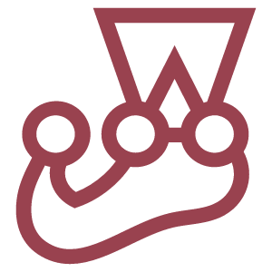
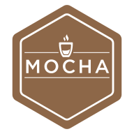

Eduardo Sacco
Electronic Engineer - Senior Software Engineer
About me
Hi im Ed! I am an engineer from Argentina with 4+ years proven experience in the software development industry.
I am a quick learner and thinker who takes ownership of his work and leverages team work and expertise to drive impact.
I contributed to Microsoft's production Email Orchestrator solution and I was part of POAPs core developers team.
Work experience
These are some of the companies I have worked for in the past.

POAP
Senior Software Engineer
Remotely from October 2021 to September 2022
About the company
POAP (Proof of Attendance Protocol) is a Web3 company whose main product are the homonym POAPs, digital collectibles created as an NFTs that enable a new way of keeping long-lasting records of life experiences leveraging on the blockchain technology.
About the role
Back End Engineer part of the core engineering team in charge of the maintenance and improvement of POAP's core functionality namely, viewing POAPs, minting them on the Blockchain, and preventing farmers.
- Develop a new service to abstract and handle blockchain transactions resiliently from scratch.
- Maintained and optimized the core POAP server codebase and improved its security, maintainability, resiliency and efficiency.
- Improved observability of the core system components.
Check out the POAPs I collected here.

KIN + CARTA
Senior Software Engineer Consultant
Remotely from March 2021 to September 2021
About the company
Kin + Carta is a global digital transformation business, that leverages on over 1,700 highly specialized technologists, strategists and creatives across four continents, making the journey to becoming a digital business tangible, sustainable, and profitable.
About the role
Back End Engineer developing Swift, a brand new business management app for Magellan Midstream Partners.
- Developed several new web API endpoints to retrieve, process and present complex business data sets.
- Started designing and implementing a new testing framework.
- Quickly learnt project infrastructure and helped onboarding new team members.

Southworks
Senior Software Engineer
Buenos Aires/Remotely from May 2018 to March 2021
About the company
Southworks is a global software development partner that brings dev-intensity to different organizations, delivering quick strategic wins to help accelerate, grow, and scale. They have big name clients such as: Microsoft, AWS,
About the role
Fullstack Engineer, vendor for Microsoft worked on Microsoft Email Orchestrator, an internal tool to build and deliver emails for company products at scale. At the time MEO was picked to be the default email handling tool for all internal Microsoft emails and was sending around 7M emails per day.
- Designed and implemented new features autonomously. Took ownership of several crucial pieces of the project.
- Identified, isolated, diagnosed and fixed production issues.
- Responsible for weekly (iteration) planning and backlog grooming. Drove iteration planning meetings with the customer, MSFT MEO Product Owner.
- Managed three dev fire-team. Signed off pull requests. Analyzed and provided feedback about developers performance.

Tubular NDT Service
General Manager
C. Rivadavia from February 2017 to October 2017
About the company
Tubular NDT Service is a Non Destructive Testing company which provides services for oil companies.
About the role
Logistics planning and coordination of workflow. Customer relationships. Preparation of budgets and tenders. Reception of quality and security audits. Enforcing and updating QMS. Non destructive testing audits. In charge of 16 people.
- Develop new web API endpoints to retrieve, process and present complex business data sets.
- Designing and implementing a new testing framework.
- Quickly learnt project infrastructure and helped onboarding new team members.
Skills
I love to learn new things and take on new challenges. These are some of the technologies I have used through my professional career.
Cloud Providers
 Amazon Web Services
Amazon Web Services Microsoft Azure
Microsoft Azure
Programming Languages and Frameworks
 C
C- C++
 C#
C#- .NET and .NET Core
 Javascript
Javascript Typescript
Typescript Node js
Node js Go
Go React
React Express
Express Nest js
Nest js
Databases and Memory
 SQL
SQL Postgres
Postgres Redis
Redis My SQL
My SQL SQL Server
SQL Server Mongo DB
Mongo DB Dynamo DB
Dynamo DB Cosmos DB
Cosmos DB
Testing Frameworks
 n unit
n unit - x unit
- Jest
- Mocha
What others say about me
James Nitz
Software Developer
September 29, 2021, James worked with Eduardo on the same team.
Eduardo is a great developer and teammate. He was always willing to pivot to help another team member or take any other high priority task and worked diligently to meet deadlines. He helped spearhead a stronger focus on testing to improve the codebase and also helped to train new team members.
Charlotte Wilson
Certified Scrum Master at Kin + Carta
October 22, 2021, Charlotte worked with Eduardo on the same team
Eduardo is one of the hardest working, dedicated BE developers that I have come to know. I have had the pleasure of working with Eduardo as his Scrum Master and I am continually impressed with his knowledge and support to get the job done. One project that we have been working on in particular Eduardo is able to perform at the velocity of 2 or 3 developers combined. Eduardo also has great communication skills when advising a viable solution to the client. Eduardo is the true glue that holds the team together and is a true expert in his field.
Annie Moy, CSPO
Consultant, Product Strategy at Kin + Carta
November 4, 2021, Annie worked with Eduardo on the same team
Eduardo is extremely knowledgeable and skilled in his craft. As the Product Owner on our fairly complex project, I found that he is able to quickly understand the problem we are trying to solve and asks thoughtful, detailed questions to ensure that the best solution is implemented. Ed is extremely detail-oriented and meticulous with his code. He is also a wonderful team player, always willing to step up and assist a junior developer or pair to get someone unstuck. He has great communication skills for all levels of the business, whether it is with someone technical like himself, someone middle-ground like me, or someone not very technical like the client. He is always able to explain in a way that is on the other person's level.
Elijah Gay
Team Lead at Kin+Carta
November 4, 2021, Elijah managed Eduardo directly
Eduardo is a hard-working, intelligent developer. In my time working with him, our team faced great technical challenges, and Eduardo eagerly pursued them - and completed them as well! His code is clean and easy to read. He keeps a positive attitude and has built up strong working relationships with his co-workers, even when distance and time zones could have raised issues. I would happily work with Eduardo again.
Mathieu Tremblay
Entrepreneur at POAP - The Proof of Attendance Protocol
September 1, 2022, Mathieu worked with Eduardo but on different teams
In addition to being a good developer, Eduardo has a great personality that makes him a great teammate. He was also committed to the success of the business, made sure everybody was feeling awesome (he took very good care of us when we visited in Argentina) and was a positive contributor at all times.
Ignacio Nicolás Negro Caino
Software Engineer at POAP - The Proof of Attendance Protocol
September 3, 2022, Ignacio Nicolás worked with Eduardo on the same team
Eduardo is one of the greatest person I'd had the pleasure to work with, He's professional, great partner and versatile. He is one of those people which you can give him an unknown problem and he will eventually find an optimal and efficient solution to it. Also he performs well communication ideas and arguing about them with the team.
Ignacio Grayeb
Software Engineering Team Lead at POAP - The Proof of Attendance Protocol
September 3, 2022, Ignacio worked with Eduardo but on different teams
Eduardo is an outstanding professional, with great knowledge and capacity to adapt to fast-paced changes. He is a true team worker and problem solver and has the ability of quickly learning new technologies and excelling at them.
Education
University
Buenos Aires Institute of Technology
2019 - Electronic Engineering degree with a specialization in Digital Signal Processing.
Languages
Fluent technical English
I've been working with multicultural international teams where the main communication language has been English for more than 5 years.
Native spanish
I was born in Argentina, Spanish is my native language.
Get in touch
Feel free to reach out if you want to know more about me!
Elsewhere
Schedule time with me
By Eduardo Sacco. Based on:
HTML5 UP.